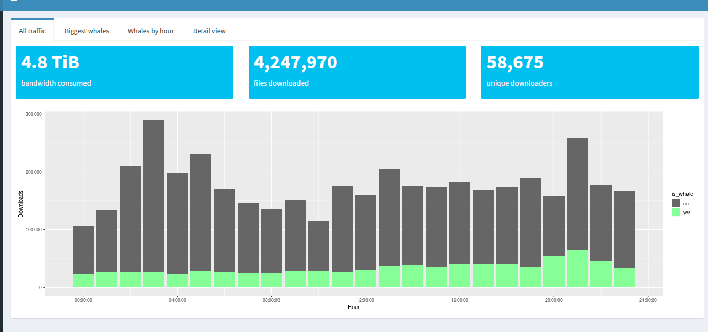
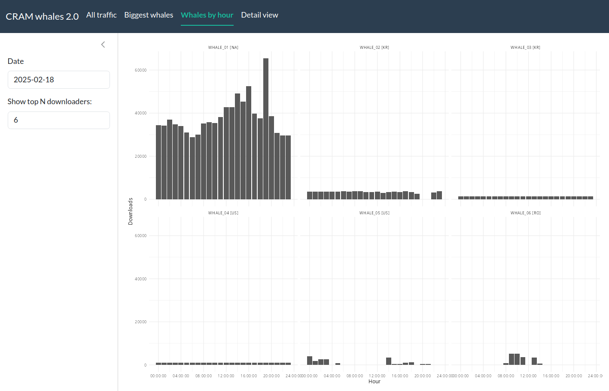
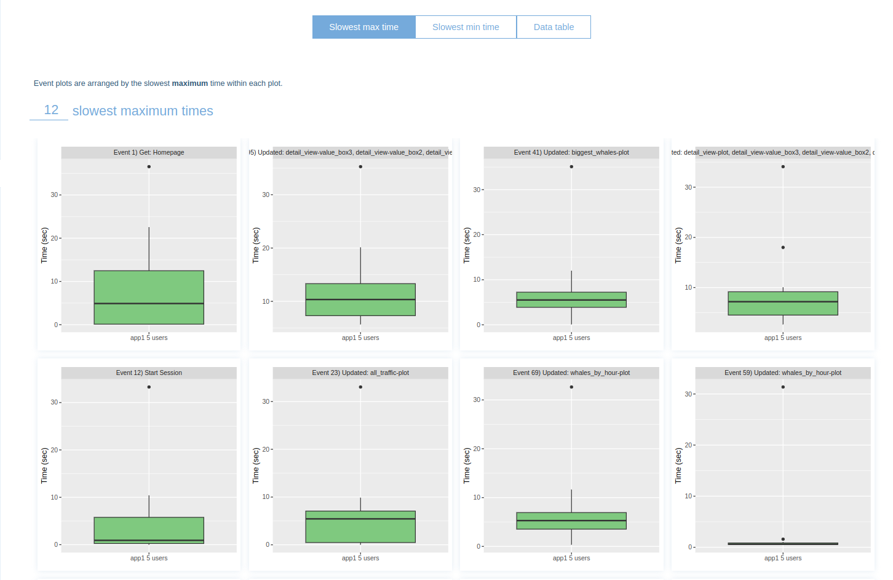

# df = download_and_read()
# glimpse(df, n = 10)2 Simple whale
A guide to serve a shiny app to the maximum amount of people ever imagined
3 Intro
Given a fixed amount of hardware serving the shiny app (say, 2 cores) and a fixed amount of hardware serving an optional API backend (say, 4 cores), how many people can access a shiny app and have a good experience? Can we make it to a thousand?
This guide is a modern reading of the classic promises Case study: converting a Shiny app to async mixed with shinyloadtest Case study: Scaling an app.
Starting with an innocent shiny app, we will do many steps to make it more performant and analyze how many people can use it at the same time, creating reports with shinyloadtest and shinycannon. The roadmap is the following:
- App 1: the first version of the cranwhales app1. We will modify some things to make it more modern (for example, use
bslib). - App 2: modify App 1 to introduce cache and memoise; use faster functions where possible.
- App 3: modify App 2 to introduce async via the new ExtendedTask.
- App 4-R: modify App 3 to use an external plumber API.
- App 4-Julia: modify App 3 to use an external API made in Julia with Oxygen.jl. Julia is known for being a high-performance language, so let’s give it a try here.
- App 4-Python: modify App 3 to use an external API made in fastapi?
The repo is structured as a R package to make it easy to track dependencies, load functions and share them between the apps.
4 A tour by CRAN whales
You can see it online or follow me in this guided tour.
The app intention is to show the whales: certain IPs that download a lot of data from CRAN. Let me describe its features.
4.1 Widgets
The app has two widgets in a sidebar: - a date selector, stored in input$date: the day of the downloads. - a numeric input with the amount of whales (that is: the top N downloaders); stored in input$n_whales. It goes from 1 to 25.
There is no button.

4.2 The data
For each selected date, the app should download the zipped file from http://cran-logs.rstudio.com/ and read it.
We will store the downloaded data to be read again for the next user, but will delete all data when the app starts globally (not per-user) mimicking the fresh start of a new server.
Each zipped file has around ~90MB and stores a dataframe with ~7 million rows and 6 columns; it takes ~250MB of RAM after read. Here is a glimpse of the dataset:
4.3 Tab 1: All traffic
This tab show three value boxes and a chart with the amount of downloads per hour, colored by whales vs. non-whales. You can see the impact of 6 users compared to the total ~58k users.

We need to calculate the top N whales2 and store it in a variable; then we calculate the amount of downloads per id per hour and colour by whale vs. non-whale.
4.4 Tab 2: Biggest whales
Here we compare the amount of downloads between the whales in a single day.

4.5 Tab 3: Whales by hour
For each whale in a facet, count the downloads by hour.

4.6 Tab 4: Detail view
In the detail view, we can see which package was downloaded in a timeline by selecting a whale.


5 App 1: modern cranwhales
I’ve made some changes compared to the original 2018 CRAN whales app:
I used the more modern
bslibinstead ofshinydashboard.I created a module for each page and appended the app version to it (for example,
md1.all_traffic_UImeans “module for app 1”). I also prepared all possible data in server before passing these to the modules3. It will be easier to optimize the app later in this setting, and I pass to each module just the essential.I isolated all calculations and plots in separate files (
R/data.RandR/plots), to be reused. More important: inside arenderPlotthere is no calculation; in this way, a typical pipeline israw_data |> prepare_data() |> plot_data().
To run the app, load all dependencies with devtools::load_all() (or control+shift+L, in RStudio) and just run
run_app1()



5.1 Code
Here I show a bit of code; this session can be skipped, but some details about the server will be needed later.
5.1.1 UI
The UI simply call the modules
ui1 <- function() {
ui <- page_navbar(
title = "CRAM whales 2.0",
theme = my_bs_theme(),
sidebar = sidebar(
dateInput(inputId = "date", label = "Date", value = app_start_date(), max = app_start_date()),
numericInput(inputId = "n_whales", label = "Show top N downloaders:", 6, min = 1, max = 25, step = 1)
),
nav_panel(title = "All traffic", md1.all_traffic_UI()),
nav_panel(title = "Biggest whales", md1.biggest_whales_UI()),
nav_panel(title = "Whales by hour", md1.whales_by_hour_UI()),
nav_panel(title = "Detail view", md1.detail_view_UI())
)
ui
}5.1.2 Server
In the server I tried to calculate all necessary reactives to pass to modules; reactives have a rc. to be easy to remember which objects are reactive and which are not.
Code
server1 <- function(input, output, session) {
# rc.data: read data ------------------------------------------------------
rc.data <- reactive({
download_and_read(input$date)
}) |>
bindEvent(input$date)
# Tab 1: All traffic ------------------------------------------------------
# rc.count: simple counting -----------------------------------------------
rc.count <- reactive({
calc_count_downloads(rc.data())
})
# rc.whales: separate the whales ------------------------------------------
rc.whales <- reactive({
create_ip_names(rc.count(), input$n_whales)
}) |>
bindEvent(input$n_whales, rc.count())
rc.whales_vs_non_whales_by_hour <- reactive({
calc_whales_vs_non_whales_by_hour(df = rc.data(), whale_ip = rc.whales()$ip_id)
})
# rc.valueboxes ------------------------------------------------------------
rc.valuebox1 <- reactive({
calc_valuebox_size(rc.data())
})
rc.valuebox2 <- reactive({
calc_valuebox_rows(rc.data())
})
rc.valuebox3 <- reactive({
calc_valuebox_unique_ids(rc.data())
})
# Tab 2: Biggest whales ---------------------------------------------------
# reuse rc.whales
# Tab 3: Whales by hour ---------------------------------------------------
# rc.downloads_by_hour_with_names -----------------------------------------
rc.downloads_by_hour_with_names <- reactive({
calc_whales_by_hour(rc.data(), rc.whales())
})
# Tab 4: Detail view ------------------------------------------------------
# uses rc.data and rc.whales
# modules -----------------------------------------------------------------
md1.all_traffic_server(
rc.valuebox1 = rc.valuebox1, rc.valuebox2 = rc.valuebox2, rc.valuebox3 = rc.valuebox3,
rc.whales_vs_non_whales_by_hour = rc.whales_vs_non_whales_by_hour
)
md1.biggest_whales_server(rc.biggest_whales = rc.whales)
md1.whales_by_hour_server(rc.downloads_by_hour_with_names = rc.downloads_by_hour_with_names)
md1.detail_view_server(rc.data = rc.data, rc.whales = rc.whales)
}5.1.3 Data
The r/data.R file has all the functions necessary to read files and do the calculations.
Code
# read data ---------------------------------------------------------------
create_dir_and_delete_files <- function() {
dir.create(path = "data_cache", showWarnings = FALSE)
unlink(x = list.files(path = "data_cache", full.names = TRUE))
}
file_path <- function(date) {
path <- file.path("data_cache", paste0(date, ".csv.gz"))
path
}
download_data <- function(date = today() - days(2)) {
year <- year(date)
url <- glue::glue("http://cran-logs.rstudio.com/{year}/{date}.csv.gz")
path <- file_path(date)
# download only if file does not exist
if (!file.exists(path)) download.file(url = url, destfile = path)
NULL
}
read_data <- function(date = today() - days(2)) {
path <- file_path(date)
df <-
readr::read_csv(path, col_types = "Dti---f-fi", progress = FALSE) |>
filter(!is.na(package)) |>
mutate(hour = hms::trunc_hms(time, 60 * 60))
df
}
download_and_read <- function(date = today() - days(2)) {
download_data(date)
read_data(date)
}
# tab 1: all traffic -----------------------------------------------------------
calc_valuebox_size <- function(df) {
df$size |>
as.numeric() |>
sum() |>
gdata::humanReadable()
}
calc_valuebox_rows <- function(df) {
df |>
nrow() |>
format_number()
}
calc_valuebox_unique_ids <- function(df) {
df$ip_id |>
unique() |>
length() |>
format_number()
}
calc_count_downloads <- function(df) {
df |>
count(ip_id, country, name = "downloads") |>
arrange(desc(downloads))
}
calc_whales_vs_non_whales_by_hour <- function(df, whale_ip) {
whales_vs_non_whales_by_hour <-
df |>
mutate(
is_whale = ip_id %in% whale_ip
) |>
count(hour, is_whale, name = "downloads")
whales_vs_non_whales_by_hour
}
# tab 2: biggest whales ------------------------------------------------------------------
create_ip_names <- function(df_count, n_whales) {
df_count |>
slice_head(n = n_whales) |>
mutate(ip_name = paste0("WHALE_", formatC(x = row_number(), width = 2, flag = "0"), " [", country, "]"))
}
# tab 3: whales by hour ----------------------------------------------------------
calc_whales_by_hour <- function(df, df_whales) {
whales_by_hour <-
df |>
inner_join(df_whales, by = "ip_id") |>
count(hour, ip_name, name = "downloads")
whales_by_hour
}
# tab 4: detail view ----------------------------------------------------------
calc_valuebox_unique_packages <- function(df) {
df$package |>
unique() |>
length() |>
format_number()
}5.1.4 Plots
Here we stored every function related to plotting things. They were stolen as-is from the original CRAN whales app code.
Code
my_gg_theme <- function() {
theme_minimal()
}
# tab 1: all traffic -------------------------------------------------------------
plot_whales_vs_non_whales_by_hour <- function(whales_vs_non_whales_by_hour) {
whales_vs_non_whales_by_hour |>
ggplot(aes(hour, downloads, fill = is_whale)) +
geom_bar(stat = "identity") +
scale_fill_manual(
values = c("#666666", "#88FF99"),
labels = c("no", "yes")
) +
ylab("Downloads") +
xlab("Hour") +
scale_y_continuous(labels = scales::comma) +
my_gg_theme()
}
# tab 2: biggest whales ------------------------------------------------------------------
plot_biggest_whales <- function(biggest_whales) {
biggest_whales |>
ggplot(aes(ip_name, downloads)) +
geom_bar(stat = "identity") +
ylab("Downloads on this day") +
my_gg_theme()
}
# tab 3: whales by hour ----------------------------------------------------------
plot_downloads_by_hour_whales <- function(downloads_by_hour_with_names) {
downloads_by_hour_with_names |>
ggplot(aes(hour, downloads)) +
geom_bar(stat = "identity") +
facet_wrap(~ip_name) +
ylab("Downloads") +
xlab("Hour") +
my_gg_theme()
}
# tab 4: detail view ----------------------------------------------------------
plot_whale_data <- function(whale_data) {
pkg <- levels(whale_data$package)
breaks <- pkg[seq(from = 1, to = length(pkg), length.out = 50) %>%
as.integer() %>%
c(1, length(pkg)) %>%
unique()]
whale_data |>
ggplot(aes(time, package)) +
geom_point() +
scale_x_time(
breaks = seq(hms::hms(0, 0, 0), by = 60 * 60 * 3, length.out = 9),
limits = c(hms::hms(0, 0, 0), hms::hms(0, 0, 24))
) +
scale_y_discrete(breaks = breaks)
}6 Intermezzo: profiling App 1
There are two ways to measure the performance of this app:
We can analyze the amount of time each function takes to execute and try to optimize them. This measures the experience of a single user. We will use ’profviz` for that.
We can analyze the behavior of \(n\) concurrent users in the app and see what functions/outputs/reactives are taking more time. Remember: since R is single-threaded, if 10 people are using the app and one session triggers a slow calculation, all sessions will have to wait for it to finish. We will use
shinyloadtestfor that.
6.1 profviz
Following this tutorial from the profviz package, I recorded one session of the app being used. I just roamed around a bit, changing the inputs and seeing some graphs.
Looking at the profviz result, we can think of some changes to make in the app:
- The function
calc_whales_by_hourtakes around 1/4 seconds to run; it is not bad, but with dozens of concurrent users this can be a problem.
The code for this function is simple:
calc_whales_by_hour <- function(df, df_whales) {
whales_by_hour <-
df |>
inner_join(df_whales, by = "ip_id") |>
count(hour, ip_name, name = "downloads")
whales_by_hour
}but with 7 million rows this anti join can get a little slow. Every time you change the number of whales, this is recalculated. One solution is to calculate the counting just one time for every ip_id and already calculate the top 25 whales (which is the maximum number for the selectInput).
- Downloading the data takes a long time. Some files can have ~100MB. Reading them also takes time. We will cache these operations.
6.2 shinyloadtest
Following the shinyloadtest docs, we have to:
Install
shinycannon: a tool in Java to simulate \(n\) concurrent users. If you got any errors, take a look at your Java version.Run your app in a background job (to not block your R session).
I created a directory called jobs/ where I stored these scripts. For example, to run App 1 deleting all the files in data_cache, I wrote
devtools::load_all()
run_app1(delete_files = TRUE)and then click to run as background job on RStudio.
- Run
record_session: this will open a new tab where you can play around the app simulating a user; the output is a recording object.
More precisely, I ran
shinyloadtest::record_session(glue::glue("http://127.0.0.1:8001"), output_file = "app1")- Use the
shinycannoncommand to run the recording with \(n\) users. Here I chose \(n = 10\) and a minimum duration of 4 minutes. The output is saved onrun_app1w10(App 1, run with 10 workers).
shinycannon app1 http://127.0.0.1:8001 --workers 10 --loaded-duration-minutes 4 --output-dir run_app1w10 --overwrite-outputYou can see R/load_test.R for some auxiliary functions.
The complete report can be seen on my_runs.html, but here are some highlights:




7 App 2: avoid redundances and cache what you can
We modified the server of App 1 as follows:
#| code-fold: true
server2 <- function(input, output, session) {
# rc.data: read data ------------------------------------------------------
rc.data <- reactive({
download_and_read(input$date)
}) |>
bindCache(input$date) |>
bindEvent(input$date)
# Tab 1: All traffic ------------------------------------------------------
# rc.count: simple counting -----------------------------------------------
rc.count <- reactive({
calc_count_downloads(rc.data())
}) |>
bindCache(input$date)
# rc.whales: separate the whales ------------------------------------------
rc.whales <- reactive({
create_ip_names(rc.count(), input$n_whales)
}) |>
bindCache(input$date, input$n_whales)
rc.whales_vs_non_whales_by_hour <- reactive({
calc_whales_vs_non_whales_by_hour(df = rc.data(), whale_ip = rc.whales()$ip_id)
}) |>
bindCache(input$date, input$n_whales)
# rc.valueboxes ------------------------------------------------------------
rc.valuebox1 <- reactive({
calc_valuebox_size(rc.data())
})
rc.valuebox2 <- reactive({
calc_valuebox_rows(rc.data())
})
rc.valuebox3 <- reactive({
calc_valuebox_unique_ids(rc.data())
})
# Tab 2: Biggest whales ---------------------------------------------------
# reuse rc.whales
# Tab 3: Whales by hour ---------------------------------------------------
# rc.downloads_by_hour_with_names -----------------------------------------
rc.downloads_by_hour_with_names <- reactive({
calc_whales_by_hour(rc.data(), rc.whales())
}) |>
bindCache(input$date, input$n_whales)
# Tab 4: Detail view ------------------------------------------------------
# uses rc.data and rc.whales
# modules -----------------------------------------------------------------
md1.all_traffic_server(
rc.valuebox1 = rc.valuebox1, rc.valuebox2 = rc.valuebox2, rc.valuebox3 = rc.valuebox3,
rc.whales_vs_non_whales_by_hour = rc.whales_vs_non_whales_by_hour
)
md1.biggest_whales_server(rc.biggest_whales = rc.whales)
md1.whales_by_hour_server(rc.downloads_by_hour_with_names = rc.downloads_by_hour_with_names)
md2.detail_view_server(rc.data = rc.data, rc.whales = rc.whales)
}We also cached the plots, for example in the last module:
!!!We run run_app2() and see that only the first running of a given function is really calculated; the rest is cached.
7.0.1 Some key points when using bindCache
- The cache key can’t be too big. Using the entire
rc.data()would be slow. Since there is a bijection between days and rc.data, we can use solely the date.
bindCache docs
To compute the cache key, bindCache() hashes the contents of …, so it’s best to avoid including large objects in a cache key since that can result in slow hashing. It’s also best to avoid reference objects like environments and R6 objects, since the serialization of these objects may not capture relevant changes.
If you want to use a large object as part of a cache key, it may make sense to do some sort of reduction on the data that still captures information about whether a value can be retrieved from the cache. For example, if you have a large data set with timestamps, it might make sense to extract the most recent timestamp and return that. Then, instead of hashing the entire data object, the cached reactive only needs to hash the timestamp.
r <- reactive({ compute(bigdata()) } %>%
bindCache({ extract_most_recent_time(bigdata()) })Saving a big object in the disk takes time! The first time we read a file, a copy of
rc.datais going to be saved as a RDS file in themyapp-cachedir. This can take some seconds to finish.We are using
shinyOptions(cache = cachem::cache_disk("./myapp-cache", max_size = 1024 * 1024^2, logfile = stdout(), evict = "lru"))as the caching options. This means that the cache will be saved on disk so all users (even in different sessions) can access the cache. The files will be saved up to 1GB and then the least used will be deleted.